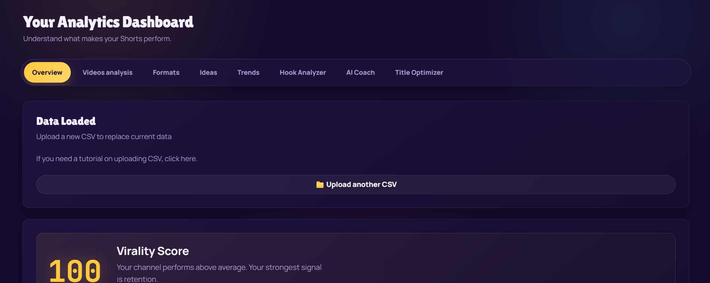
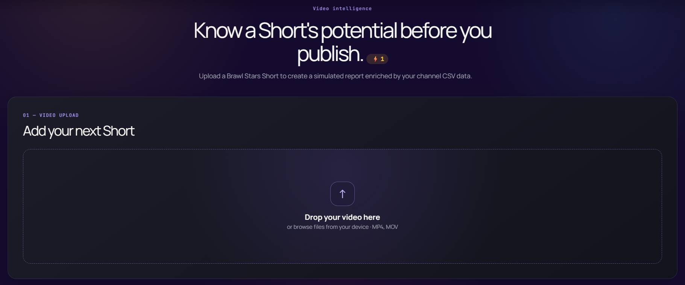
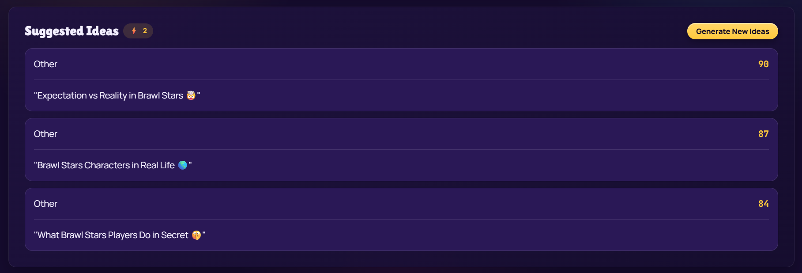

Why Brawl Analytics Exists
Most analytics tools are built to explain what already happened. You publish a video, wait, and then look back at a graph to understand why it did or didn't work. By the time that graph exists, the moment to act on it is already gone.
Brawl Analytics starts from a different point in the timeline. The question it's built to answer isn't "what happened to my last video?" but "should I publish this one, and how could it be stronger?" — asked while the idea, the hook, or the title is still a draft and there's still room to change it.
That's also why it doesn't try to cover all of YouTube. Trying to model every niche at once means understanding none of them particularly well. Brawl Stars Shorts have their own rhythm — specific formats, specific pacing, a specific audience with its own expectations — and the platform is built around that one space deliberately, rather than as a general-purpose tool with a Brawl Stars skin on top.
Underneath all of it is a simple belief: raw numbers in YouTube Studio aren't useful on their own. Views, retention and watch time only become useful once they turn into a decision — upload this format again, rewrite that hook, hold off on that idea. Turning historical data into a decision a creator can actually act on is the whole point; showing the data back to you nicely formatted is not.
So this is less a dashboard for admiring past performance and more a working tool for improving what comes next. This documentation walks through every part of it in the order a new creator typically encounters them, starting with how the platform learns about your channel in the first place. If you'd like more background on the project itself, there's also an About page.
What the tools look like



Upload YouTube Studio CSV
Every analysis on Brawl Analytics starts with one file: the Table data CSV export from YouTube Studio.
You can find this export inside YouTube Studio, under Analytics → Content → Table data → Export current view. It's a plain spreadsheet listing every video on your channel with the metrics YouTube tracks for each one.
Brawl Analytics reads this file to understand:
Total and relative view counts across your upload history.
How long viewers stay on each Short before dropping off.
How often and how consistently you publish over time.
The length of each Short, and how it correlates with performance.
When each video went live, used to study timing patterns.
The wording of past titles, cross-referenced against outcomes.
This CSV is not used simply to redraw the same numbers you already see in Studio. It's the raw material used to build your Channel Profile — the foundation every other tool on the platform reads from. Your videos themselves are never uploaded to Brawl Analytics; only the metadata contained in the CSV export is processed.
You can re-upload an updated export at any point as your channel grows. Each new CSV replaces the previous one as the source of truth, so your Channel Profile and every score derived from it reflect your most recent upload history rather than a snapshot frozen at the moment you first signed up.
Channel Profile
This is one of the most important concepts on the platform, because it's the layer that makes every later analysis personal instead of generic.
Once your CSV is processed, the AI studies your historical data as a whole rather than video by video. From that history it learns things such as:
This becomes your Channel Profile, and it is the foundation every other tool on the platform reads from — the Virality Engine, the Format Detector, the Idea Generator and the Personal AI Coach all reference it. Because the profile is built from your own numbers, not an industry average, two creators with different histories will get different scores, different format rankings and different recommendations for the exact same video idea.
If your CSV covers only a handful of videos, the platform will say so rather than guess — recommendations get more precise as more upload history is added.
To make this concrete: imagine two creators both consider the exact same "Ranked 1v1 challenge" idea. One of them has a history full of high-retention Ranked content and consistent weekly uploads; the other has mostly posted Funny Edits and uploads irregularly. Both submit the identical idea to the platform, but because their Channel Profiles are different, the scores, expected view range and coaching notes they each receive will differ too — the idea is evaluated against what has actually worked for that specific channel, not against a shared average.
Format Detector
Instead of sorting your videos into generic YouTube categories, the Format Detector discovers the recurring content formats that are specific to your channel.
It looks across your upload history for patterns that repeat — a certain type of edit, a certain kind of gameplay clip, a recurring joke structure — and groups them into formats such as:
These are examples, not a fixed list — the exact formats detected depend on what you've actually uploaded. Once formats are identified, each one is ranked by its real historical performance on your channel: average views, average retention, and consistency across every video that belongs to it.
The result is a clear answer to a question most creators only guess at: which types of videos consistently perform best for you, specifically, rather than for Shorts creators in general.
Format rankings aren't fixed once they're calculated. As you upload more videos in a given format, the ranking adjusts to reflect that additional evidence — a format that looked strong after five videos might settle lower once twenty have been analyzed, or a format you've only recently started experimenting with can rise as it proves itself out.
If eight of your last twelve Shorts turn out to share the same trickshot-into-punchline structure, the Format Detector groups them together as one recurring format — even if you never labeled them that way yourself — and ranks it against your other formats by real average views and retention.
Video Analysis
Where the Virality Engine works from a written idea, Video Analysis works from the project itself — before it goes live.
You upload a Short you're preparing to publish, and the AI reviews the video directly rather than waiting for YouTube's own statistics to accumulate after release. The analysis focuses on:
How effectively the opening moments earn attention.
Whether the rhythm of cuts and beats holds interest.
Whether the point of the video is easy to follow.
How transitions and timing shape the viewing experience.
Where in the video attention is most likely to drop.
Elements likely to drive comments, likes or shares.
The goal is straightforward: surface weak points while there's still time to re-edit, rather than learning about them from a retention graph after the video is already public.
Video Analysis is deliberately scoped to the video itself rather than to the idea behind it — it complements the Virality Engine instead of replacing it. A strong idea can still be undercut by a slow edit or a buried hook, and this is the step designed to catch that before it happens.
Hook Analyzer PRO
The Hook Analyzer looks at exactly one thing: the first few seconds of your Short, since that's what decides whether a viewer keeps watching or scrolls past.
You describe how the video opens — no title, no description, no extra fields required. The AI evaluates that opening across several dimensions:
It then generates several alternative hooks that aim to open the video more strongly, so you can compare your original opening against a handful of concrete rewrites. The purpose is narrow and specific: sharpen the first seconds, which on Shorts is usually the single biggest lever a creator has over performance.
The tool is intentionally limited to just the hook rather than the whole video, because the decision to keep scrolling or keep watching is made in that opening window, before a title, a description, or the rest of the edit ever comes into play. Testing a few hook variants against each other is often faster than re-filming an entire Short.
Title Optimizer PRO
You enter a title you're considering, and the AI scores it across the dimensions that actually influence click-through and discovery:
From there, it generates a set of alternative titles written in different styles, so you're not just given one "better" version but a range of directions to choose from:
Leaves a gap the viewer wants closed.
Frames the video around a matchup or challenge.
Leads with the comedic angle of the clip.
Emphasizes intensity or a standout moment.
Mirrors phrasing patterns seen in high-performing Shorts.
Leads with the value or takeaway for the viewer.
These styles often pull in different directions — a highly curious title isn't always the most searchable one, and an extreme title isn't always the most readable one. Rather than collapsing everything into a single "best" title, the optimizer gives you several honest trade-offs and lets you pick the one that fits the video and your channel's voice.
A title like "I played Brawl Stars" scores low on curiosity and CTR potential. The optimizer might suggest a curiosity-driven alternative like "This 1 HP Play Shouldn't Have Worked" alongside a more searchable version that keeps the brawler's name, so you can weigh intrigue against discoverability.
Idea Generator
Ideas here aren't produced by asking an AI to "come up with something" in the abstract. Each suggestion is built by combining several concrete inputs:
Current trends within the Brawl Stars content space
Your own channel history and Channel Profile
The formats that have performed best for you specifically
Broader historical performance patterns across formats
Mechanics and structures that tend to hold viewer attention
The result is a list of ideas shaped around your own audience rather than a generic list of "trending topics" — each one arrives already filtered through what your channel's history suggests will actually work.
Every generated idea is meant as a starting point, not a finished script. From there, the natural next step is to run it through the Virality Engine to see how it scores against your history, or straight into the Hook Analyzer once you know how you'd open it.
If Ranked 1v1 Challenges are your best-performing format and a particular brawler is trending in the community right now, a generated idea might combine the two directly — a Ranked Challenge built specifically around that brawler — instead of suggesting either element on its own.
Personal AI Coach PRO
Every other tool on the platform answers a specific question about a specific video. The Personal AI Coach is different: it continuously studies your entire channel over time and tells you what it's learned.
Rather than a single-use analysis, the Coach maintains an ongoing view of your channel, tracking things like:
Patterns that consistently work in your favor.
Recurring issues that hold videos back.
How regularly you publish, and how that affects growth.
Which formats are pulling their weight, and which aren't.
Whether recent uploads are trending up or down.
Specific, actionable directions worth testing next.
From this, it gives strategic recommendations written in plain language, for example:
"Your Guides usually receive lower retention."
"Your average retention has improved by 12%."
"You should upload more Challenges next week."
Two principles are always built into how the Coach reasons about your channel: consistent publishing habits usually create more opportunities to learn and improve, while timing can still matter when trends move quickly, and directly copying another creator's idea tends to cap out at modest performance — original ideas and formats are what sustain growth over time.
Recommendations are not static. As more videos are analyzed and more history accumulates, the Coach's picture of your channel gets more precise, and its suggestions evolve with it.
Where the Virality Engine and Hook Analyzer answer a question about one specific video, the Coach is meant to be checked back in on periodically — after a batch of new uploads, or whenever you're deciding what to focus on next — rather than used once and forgotten.
How your data is handled
Brawl Analytics is built around your channel's data, so it's worth being explicit about how that data is treated.
Your videos are never shared publicly through the platform. CSV files you upload are used strictly to power your own analytics and predictions — not for any other purpose. Personal data is never sold to third parties. Data processing exists for one reason: to generate the analytics, scores and recommendations described throughout this page, for you alone.
Your Channel Profile, uploaded CSV data and generated ideas are tied to your account and are not visible to other users of the platform. If you use both the free and Pro tiers over time, this same data carries forward rather than resetting — your history is what makes the platform useful, so it's treated as something to preserve, not discard.
This section is a summary. The full Privacy Policy and Terms & Conditions cover data retention, your rights, and account-level details in full.
Future Features
Brawl Analytics is under active development. The following features are currently planned and not yet available — they're listed here so creators know what's coming, not as claims about what exists today.
The roadmap is shaped in large part by feedback from creators actually using the platform, so priorities here can shift as that feedback comes in.
A few things creators usually ask
No. The Table data CSV export from YouTube Studio is currently the only supported data source, since it's what the Channel Profile is built from.
No. There's no OAuth connection or API key required — you export a CSV file from YouTube Studio and upload it directly.
The "Table data" CSV under Analytics → Content, with the Lifetime date range. A full walkthrough is available in the CSV upload tutorial.
Whenever you've published a meaningful batch of new videos — weekly or every few uploads is a reasonable rhythm for most creators.
Every tool still works. The platform is explicit when a Channel Profile is based on limited history, and predictions sharpen as more videos are added.
No. It returns an estimated range based on your historical patterns, not a guarantee of how a video will actually perform once published.
Yes — that's the intent. The Virality Engine works from a written idea, and Video Analysis and the Hook Analyzer work from a draft before it goes live.
No. AI-generated scores and suggestions are informational and can contain inaccuracies. Treat them as a decision aid, not a final answer.
Your Channel Profile stays as it was based on your last CSV. Uploading a fresh export whenever you return brings everything back up to date.
Yes. Format rankings, Virality Engine scores and Personal AI Coach insights are all recalculated as your Channel Profile grows with new uploads.
Today, each account holds a single Channel Profile. Uploading a CSV from a different channel replaces the existing profile rather than running alongside it.
No. Brawl Analytics is built specifically around Brawl Stars content on YouTube Shorts, not as a general-purpose YouTube analytics tool.
The CSV export can include any video on your channel, but the scoring, ideal-duration guidance and formats are tuned specifically for the Shorts format.
Yes. Your CSV data, Channel Profile and generated ideas are tied to your account and are never shown to other users or sold to third parties.
You can clear or replace your uploaded CSV data from your dashboard at any time. For full account deletion, contact us at the email in our Privacy Policy.
No. Smaller channels get the same tools; the platform is simply upfront when a profile is based on limited history.
No. Every tool produces analysis, scores, or written suggestions. Filming, editing and publishing remain entirely in your hands.
The Personal AI Coach is a Pro feature. Other tools on this page are available on the free plan, with daily usage limits.